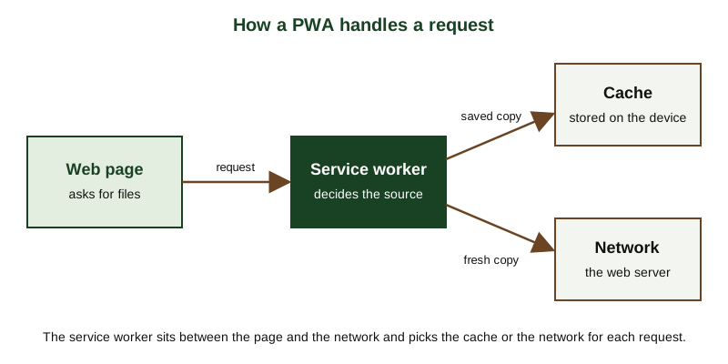

How PWAs work
A PWA is an ordinary website with a few extra files and a secure connection. The browser reads those files and gives the site abilities that normally belong to installed apps. This page covers the three parts every PWA depends on.
The three building blocks
- HTTPS. The site must be served over a secure connection. Browsers make an exception for
localhostso developers can test. - A web app manifest. A JSON file that describes the app to the browser.
- A service worker. A script that handles network requests and can serve saved copies of files.
The web app manifest
The manifest is linked from the HTML head with
<link rel="manifest" href="manifest.json">.
When the browser finds a valid manifest, it knows what to call the app,
which icon to show, and which page to open first.
| Member | What it controls | Example value |
|---|---|---|
name |
The full app name shown during install | Weather Tracker |
short_name |
A shorter name for the home screen or dock | Weather |
start_url |
The page that opens when the app is launched | /index.html |
display |
Whether the app opens with or without browser controls | standalone |
icons |
Image files used for the app icon at several sizes | 192 by 192 and 512 by 512 pixels |
theme_color |
The color of the app's title bar | #194124 |
Service workers
A service worker is a JavaScript file that the browser runs in the background,
separate from the web page. It cannot change the page directly. Instead, it
listens for events, and the most important one is fetch, which
fires whenever the page requests a file.

What a service worker can do
- Answer requests from a cache so the app loads without a connection.
- Speed up repeat visits by skipping the network for files that rarely change.
- Receive push messages from a server, if the user gives permission.
- Retry failed requests later through background sync, in browsers that support it.
Browser support
Service workers work in all current major browsers. Installing a site as an app is handled differently by each browser and operating system, and some features, such as push messages, are not available everywhere. Check the current support tables on Can I use before relying on a feature.
The next page shows how to build and test a PWA.